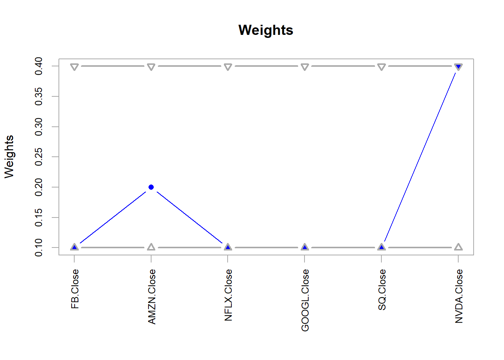
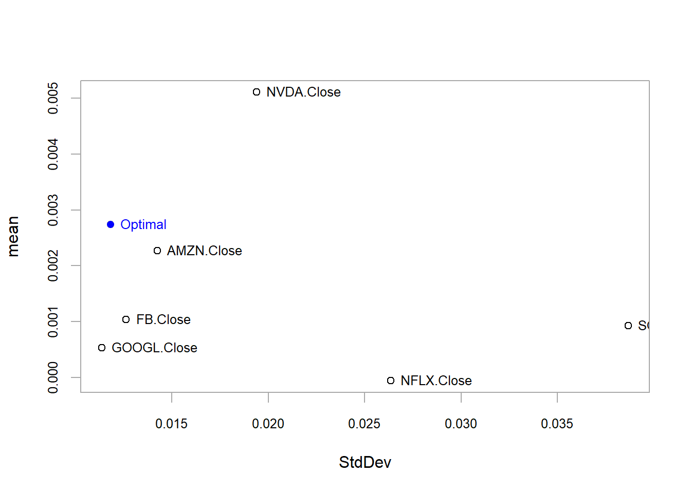
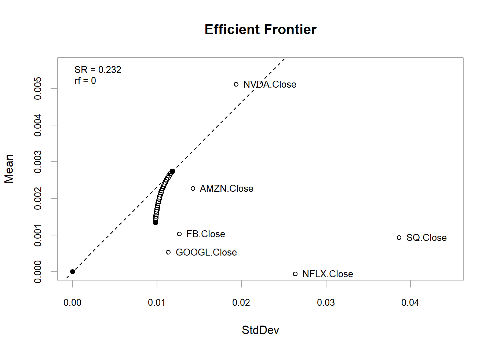

Sección 21 Optimización de portafolios
21.1 Objetivo
El objetivo consiste proveer un ejemplo de la optimización de un portafolio de acciones, maximizando los retornos y minimizando el riesgo, bajo algunas restricciones
Para la parte teorica, véase la siguiente presentación del co(autor) del paquete “PortfolioAnalytics”: https://rossb34.github.io/PortfolioAnalyticsPresentation2017/#1
El contenido de este ejemplo de la optimización de portafolios se tomó del siguiente video: https://youtu.be/6Pi0fjARtUI
21.2 Cargar datos
- Descargar los datos de las siguientes acciones de yahoo finance, utilizando el paquete quantmod: ‘FB,’ ‘AMZN,’ ‘NFLX,’ ‘GOOGL,’ ‘SQ,’ ‘NVDA’
- De acuerdo con lo anterior, cargar los paquetes quantmod y PortfolioAnalytics de R
- Asignar los tickers de las acciones a una variable “tickers”
- Definir una variable “portfolioPrices” y asignar a ella el valor NULL
- Definir como fecha de inicio (para descargar los datos) el ‘2016-03-01’ y como fecha de fin la fecha de inicio más 180 días
# paquetes requeridos
library(quantmod)
library(PortfolioAnalytics)## Loading required package: foreach##
## Attaching package: 'foreach'## The following object is masked from 'package:DescTools':
##
## %:%## The following objects are masked from 'package:purrr':
##
## accumulate, when##
## Attaching package: 'PortfolioAnalytics'## The following object is masked from 'package:igraph':
##
## constraint#?PortfolioAnalytics
# acciones (aquí de compañias de EE.UU.)
tickers <- c('FB', 'AMZN', 'NFLX', 'GOOGL', 'SQ', 'NVDA')
portfolioPrices <- NULL
startDate = as.Date('2016-03-01')
endDate = as.Date(startDate + 180)- Seleccionar el precio de cierre del formato OHLC (que se encuentra en la cuarta columna de los datos que devuelve el API de yahoo)
- Descargar los precios de todos los tickers (activos), utilizando un ciclo de tipo “for,” iterando por los tickers y asignar el resultado a la variable “portfolioPrices”
# descargar los precios, iterando por los tickers
# ... [, 4] selecciona el precio de cierre (the closing price)...
for(ticker in tickers)
{
portfolioPrices <- cbind(portfolioPrices,
getSymbols.yahoo(ticker,
from = startDate,
to = endDate,
periodicity = 'daily',
auto.assign = FALSE)[,4]
)
}- Mostrar la clase de portfolioPrices
- Mostrar las primeras dos filas (registros) de portfolioPrices
# ¿de cual clase es portfolioPrices?
class(portfolioPrices) # [1] "xts" "zoo" = una serie de tiempo## [1] "xts" "zoo"# Mostrar las primeras dos filas de los datos
head(portfolioPrices, 2)## FB.Close AMZN.Close NFLX.Close GOOGL.Close SQ.Close NVDA.Close
## 2016-03-01 109.82 579.04 98.30 742.17 10.72 8.1875
## 2016-03-02 109.95 580.21 97.61 739.48 11.97 8.235021.3 Determiar los retornos
- Determinar los retornos con respecto a cada acción (portfolioPrices), utilizando la función ROC(), omitiendo posibles registros con NA y asignar el resultado a una variable portfolioReturns
- Mostrar la clase de portfolioReturns y luego la primeras dos filas (registros)
# determinar los retornos para cada acción (activo)
portfolioReturns <- na.omit(ROC(portfolioPrices))
# ¿de cual clase es portfolioPrices?
class(portfolioReturns) # [1] "xts" "zoo"## [1] "xts" "zoo"head(portfolioReturns, 2)## FB.Close AMZN.Close NFLX.Close GOOGL.Close SQ.Close
## 2016-03-02 0.001183028 0.002018623 -0.00704410 -0.003631095 0.11029236
## 2016-03-03 -0.003370795 -0.004699036 0.00327298 -0.010726925 0.02312242
## NVDA.Close
## 2016-03-02 0.005784763
## 2016-03-03 -0.00884286921.4 Preparar los datos para la optimización
- Convertir los datos (portfolioReturns) a una solo columna (vector):
- Es decir, una sola serie de tiempo para todo el portafolio y asignar el resultado a una variable portfolio.Return
- Mostrar las primeras dos filas (registros) de portfolio.Return
#convertirlo a una sola columna (vector): es decir, una sola serie de tiempo para todo el portafolio
portfolio.Return <- Return.portfolio(portfolioReturns)
head(portfolio.Return,2)## portfolio.returns
## 2016-03-02 0.018100597
## 2016-03-03 0.000205819- Inicializar un objeto de portafolio, utilizando la función portfolio.spec() y con los nombres de portfolioReturns, asignando el resultado a una variable “portf”
# inicializar un objeto de portafolio con la función portfolio.spec() y con los nombres de cada acción
portf <- portfolio.spec(colnames(portfolioReturns))21.5 Definir restricciones
- Agregar las siguientes restricciones para la optimización del portafolio:
- full investment (type = ‘weight_sum,’ min_sum = 1, max_sum = 1) y
- un box constraint para cada activo individual, minimo 10% de participación de cada activo y máximo 40%
- Definir estas dos restricciones, utilizando la función add.constraint()
# agregar restricciones
# full investment
portf <- add.constraint(portf, type='weight_sum', min_sum = 1, max_sum = 1)
# box constraint for each individual asset; min 10% of each asset and max 40%
portf <- add.constraint(portf, type='box', min = 0.1, max = 0.4)21.6 Definir objetivos de la optimización
- Definir los objetivos de la optimización del portafolio:
- Maximizar el retorno (return) y
- Minimizar el riesgo (la desviación estándar)
- Definir estos dos objetivos, utilizando la función add.objective()
# objetivos de optimización: maximizar el retorno
portf <- add.objective(portf, type = 'return', name = 'mean')
# ...y minimizar el riesgo
portf <- add.objective(portf, type = 'risk', name = 'StdDev')21.7 Realizar la optimización
- Optimizar, utilizando el método ROI (paquete ROI, que requiere ROI.plugin.glpk y ROI.plugin.quadprog), utilizando la función optimize.portfolio con respecto a portfolioReturns y portf y el método de optimización “ROI” con el parámetro trace = TRUE y asignar el resultado a una variable optPortf
- Mostrar optPortf
# optimización aplicando el método ROI
library(ROI)## Registered S3 methods overwritten by 'registry':
## method from
## print.registry_field proxy
## print.registry_entry proxy## Registered S3 method overwritten by 'ROI':
## method from
## print.constraint PortfolioAnalytics## ROI: R Optimization Infrastructure## Registered solver plugins: nlminb, glpk, quadprog.## Default solver: auto.##
## Attaching package: 'ROI'## The following objects are masked from 'package:PortfolioAnalytics':
##
## is.constraint, objectiverequire(ROI.plugin.glpk)## Loading required package: ROI.plugin.glpkrequire(ROI.plugin.quadprog)## Loading required package: ROI.plugin.quadprogoptPortf <- optimize.portfolio(portfolioReturns, portf, optimize_method = "ROI", trace = TRUE)
optPortf## ***********************************
## PortfolioAnalytics Optimization
## ***********************************
##
## Call:
## optimize.portfolio(R = portfolioReturns, portfolio = portf, optimize_method = "ROI",
## trace = TRUE)
##
## Optimal Weights:
## FB.Close AMZN.Close NFLX.Close GOOGL.Close SQ.Close NVDA.Close
## 0.1 0.2 0.1 0.1 0.1 0.4
##
## Objective Measure:
## mean
## 0.002741
##
##
## StdDev
## 0.0118121.8 Visualizar los resultados
- Graficar los resultados, utilizando chart.Weights() para optPortf con el fin de ver la ponderación óptima calculada para cada acción (activo)
# visualizar los resultados
# visualizar la ponderación optima por acción
chart.Weights(optPortf)
- Visualizar (graficar) la cartera (el portafolio) con el punto óptimo (entre riesgo y retorno), utilizando la función chart.RiskReward() con los parámetros risk.col = ‘StdDev’ y return.col = ‘mean’ y chart.assets = TRUE
# visualizar la cartera con el punto optimo
chart.RiskReward(optPortf,
risk.col='StdDev',
return.col='mean',
chart.assets = TRUE)
# el punto optimo de la cartera debe ofrecer menos riesgo que el activo individual menos riesgoso21.9 Frontera eficiente
- Extraer la frontera eficiente del portafolio, utilizando los parámetros como se indican en la página de ayuda para la función extractEfficientFrontier y asignar el resultado a una variable “ef”
# extraer la frontera eficiciente
# parametros como en la página de ayuda para la función extractEfficientFrontier()
ef <- extractEfficientFrontier(optPortf, match.col = "StdDev", n.portfolios = 25, risk_aversion = NULL)## Warning: executing %dopar% sequentially: no parallel backend registered- Graficar el resultado (la frontera eficiente del portafolio), utilizando la función chart.EfficientFrontier() y los parámetros como se indican en la página de ayuda para esta función
# visualizarlo ...
# parametros como en la página de ayuda para la función chart.EfficientFrontier()
chart.EfficientFrontier(ef, match.col = "StdDev", n.portfolios = 25, xlim = NULL, ylim = NULL,
cex.axis = 0.8, element.color = "darkgray", main = "Efficient Frontier",
RAR.text = "SR", rf = 0, tangent.line = TRUE, cex.legend = 0.8,
chart.assets = TRUE, labels.assets = TRUE, pch.assets = 21, cex.assets = 0.8)
- Observar el resultado